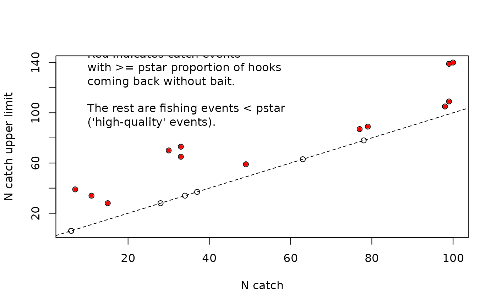

Calculate an upper bound on catch counts for the censored Poisson family
Source:R/utils.R
get_censored_upper.RdCalculate an upper bound on catch counts for the censored Poisson family
Arguments
- prop_removed
The proportion of baits removed in each fishing event from any species. I.e., the proportion of hooks returning without bait for any reason.
- n_catch
The observed catch counts on each fishing event of the target species.
- n_hooks
The number of hooks deployed on each fishing event.
- pstar
A single value between
0 <= pstar <= 1specifying the breakdown point of observed catch counts as a result of hook competition.
Value
A numeric vector of upper bound catch counts of the target species to
improve convergence of the censored method. Bounds are capped at
n_hooks.
Details
pstar could be obtained via inspecting a GAM or other smoother fit
with catch counts as the response, an offset for log(hook count), and
proportion of baits removed for each fishing event as the predictor.
Check when the curve drops off as the proportion bait removed increases.
Pass the returned vector to the censored_upper argument of sdmTMB()
with family = censored_poisson() and the observed catch counts
(n_catch) as the response. Fishing events with prop_removed below
pstar get an upper bound equal to the observed catch and are therefore
treated as uncensored. Alternatively, set censored_upper to Inf for
fishing events above pstar to use the right-censored likelihood without
an upper bound.
The right-censored Poisson density can be written as:
and the right-censored Poisson density with an upper limit can be written as:
In practice, these computations are done in log space for numerical stability.
With censored_binomial() or censored_betabinomial(), the number of
hooks is already an upper bound on the count, so Inf can be used for
censored fishing events.
References
Watson, J., Edwards, A.M., and Auger-Méthé, M. 2023. A statistical censoring approach accounts for hook competition in abundance indices from longline surveys. Canadian Journal of Fisheries and Aquatic Sciences. 80(3): 468–486. doi:10.1139/cjfas-2022-0159
Examples
dat <- structure(
list(
n_catch = c(
78L, 63L, 15L, 6L, 7L, 11L, 37L, 99L, 34L, 100L, 77L, 79L,
98L, 30L, 49L, 33L, 6L, 28L, 99L, 33L
),
prop_removed = c(
0.61, 0.81, 0.96, 0.69, 0.99, 0.98, 0.25, 0.95, 0.89, 1, 0.95, 0.95,
0.94, 1, 0.95, 1, 0.84, 0.3, 1, 0.99
), n_hooks = c(
140L, 140L, 140L, 140L, 140L, 140L, 140L, 140L, 140L, 140L, 140L, 140L,
140L, 140L, 140L, 140L, 140L, 140L, 140L, 140L
)
),
class = "data.frame", row.names = c(NA, -20L)
)
upr <- get_censored_upper(dat$prop_removed, dat$n_catch, dat$n_hooks, pstar = 0.9)
upr
#> [1] 78 63 28 6 39 34 37 109 34 140 87 89 105 70 59 73 6 28 139
#> [20] 65
plot(dat$n_catch, upr, xlab = "N catch", ylab = "N catch upper limit")
abline(0, 1, lty = 2)
above_pstar <- dat[dat$prop_removed > 0.9, ]
upr_pstar <- upr[dat$prop_removed > 0.9]
points(above_pstar$n_catch, upr_pstar, col = "red", pch = 20)
txt <- paste0(
"Red indicates catch events\n",
"with >= pstar proportion of hooks\n",
"coming back without bait.\n\n",
"The rest are fishing events < pstar\n",
"('high-quality' events)."
)
text(10, 120, txt, adj = 0)
